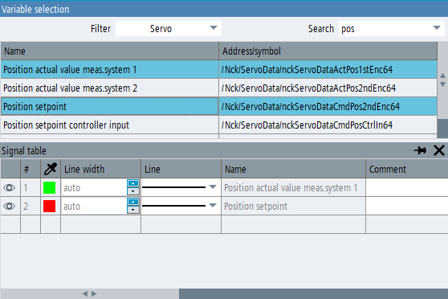

You can add variables to the trace configuration from the variable selection window.
Procedure
If the signal table is not visible, open it using softkey "Signal table" or by clicking in the toolbar on the "Signal table" symbol.
Softkey "Insert variable" is now active.
Click on the "Insert variable" softkey.
The "Variable selection" window opens.
Select the required variable from the list.
To select several variables use <CTRL> or <SHIFT> key and select the variables from the list.
Click on the "Add" softkey to insert selected variables into the configuration.
You can also add variables by dragging them from the selection list and dropping them into the signal table.
You can also add the selected variables a multiple number of times if you want to record the same variable in reference to several axes.
Click on the "<< Back" softkey to close the variable selection window.
Select the parameters for each variable in the signal table.
| | More information for a currently selected NC variable in the variable selection window can be found in the online help (does not apply to PLC or GUD variables). |
| Note |
PLC1500 symbol variables, OEM PLC variables and GUD variables are imported when the trace application is opened for the first time. The list of these variables is only available in the selection dialog and in the autocomplete list of the signal table after the import has been completed. During the import, a message is displayed in the status bar of the trace window. |
Searching in the variable selection list
The variable list includes a description of the variables with their OPI address (NC variables) or symbolic name (PLC variables). For PLC variables for 840D/828D, the tooltip of the "Address/Symbol" field displays both the symbol and the corresponding memory address. PLC1500 variables only have a symbolic name.
The selection window contains a filter dropdown list for selecting variable categories and a search input field. A search is made for the text that you type into the search field in the description text and under the addresses and symbol of those variables that are visible according to the selected filter category. The search is not case sensitive.
For 840D / 828D PLC variables, the search expression will be searched also in the memory address (even though the address is only visible in the tooltip). Therefore you can find these variables either by typing in a part of the symbol or a part of the data block address.
Inserting drive trace variables
The variable selection window for a drive trace configuration functions similar to the NC/PLC trace configuration, but displays different data.
The filter drop-down list displays the list of drive objects that exist on the machine. The list of variables display only those parameters that belong to the selected drive object.
You can search in the variable list by entering text into the "Search" input field. A search is made for the characters that have been entered in the parameter numbers and also in the parameter names (this is not case sensitive).
You can add the selected variable to the trace configuration by clicking the "Add" softkey. This inserts both the variable and the drive object into the signal table.
A variable can also be added by dragging from the selection list and dropping into the signal table (multiple selection is not allowed).
When you add a drive object that belongs to a different Control Unit than the other drive objects in the configuration, the previously selected drive objects become invalid. A confirmation prompt is displayed before this operation is executed.